A weekend of art and tapas in the capital — then a fast train under the mountains to cider country, a shuttle up to two glacial lakes, four slow nights on Spain's storybook coast, and a finale of pintxos, harbor-grilled fish, and Gehry's titanium ship in Bilbao.
Mum & Pa fly in from Singapore · X & E from Philadelphia · 12 nights, early September
No car at all until the coast: Madrid is done on foot, and a fast train slips under the mountains to Oviedo in about three hours. Then one car, one well-planned transfer day with the trip's headline mountain visit built into it, a four-night base, one short hop to Bilbao — and the car's last job is delivering us to the airport door.
Everyone lands at Madrid–Barajas; a flat-fare taxi takes us straight to the old town. Nobody drives, nobody navigates.
A full weekend: one great museum done briskly, the old town, the park, long tapas evenings — and the Sunday flea market.
The Alvia leaves from Chamartín station and runs under the Cantabrian mountains through one of Europe's longest rail tunnels — a route that took five hours until 2023. Reserved seats, bags beside us.
Asturias' polished little capital: cathedral lanes, the market, and the famous cider street. Still no car, and no museums either.
The car is collected the evening before, so the day starts at 8:00 sharp. Luggage is loaded once (the trunk stays shut until the hotel — valuables ride with us in daypacks); we park at Cangas de Onís and take the pre-booked shuttle up to the lakes. Basilica after, lunch in Cangas, then an easy motorway run east — with an optional seaside stop if energy allows. If the morning is cloudy, we simply skip the lakes: the cable car later in the week is the mountain backup.
The slow middle: a coast day, a weather-flex mountain day, and a spare day — slack built into the system.
East along the coast motorway, maybe pausing for anchovies in Santoña. The car keeps its parking spot at the Bilbao hotel for one last coastal outing.
The Urdaibai coast loop on Monday, the Guggenheim on Tuesday, and three very different dinners — all from one hotel, no packing in between.
X & E connect through Madrid to Philadelphia. Mum & Pa hop to Madrid, sleep at an airport hotel — no rushing — and fly to Singapore fresh the next day.
Train tickets go on sale a few months out and get booked the day they appear; the car is a routine one-way within Spain (Oviedo pickup, Bilbao airport drop — fee confirmed at booking); the Covadonga lakes shuttle gets booked online when the season's plan publishes in spring; timed tickets for the Prado and Guggenheim (which skips Mondays — so the coast gets Monday and the museum Tuesday), the Gaztelugatxe permit, and tables at Botín and a traditional Bilbao fish house get reserved ahead. One decision is deliberately still open: we may add a night to Madrid or Bilbao (and trim Cantabria to three) — so every hotel is held refundable until that's locked. Nothing here requires anyone else to plan anything.
None of us has ever been — and the plan is deliberately light: one museum done well, then streets, park, market, and long tapas evenings. Madrid rewards wandering more than queueing.
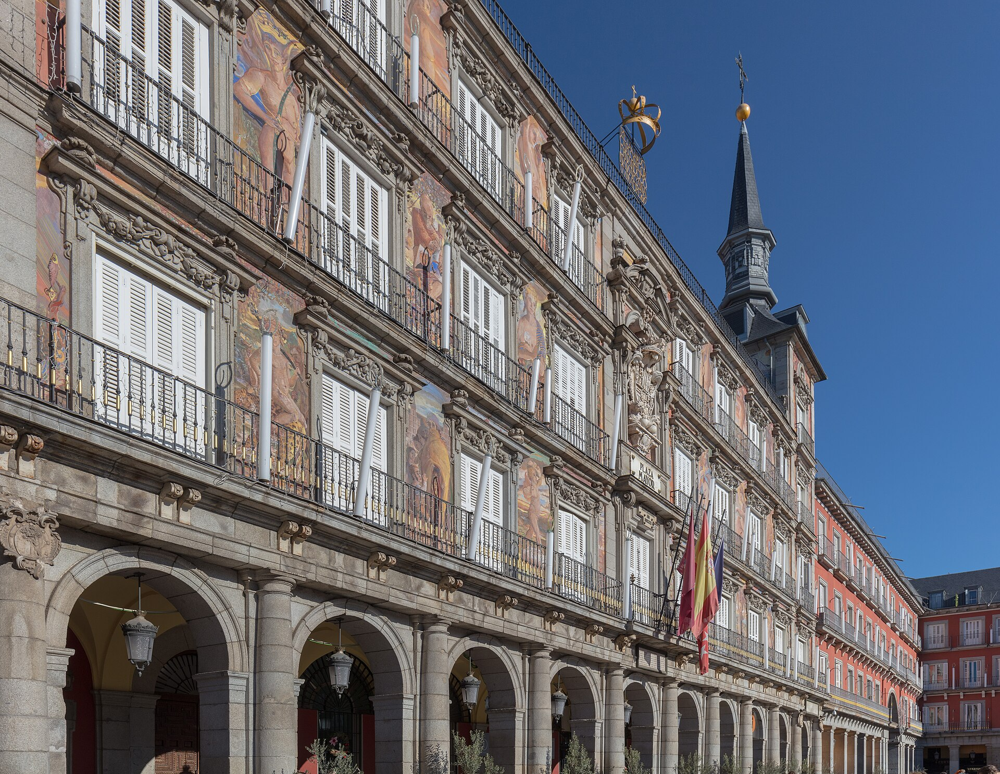
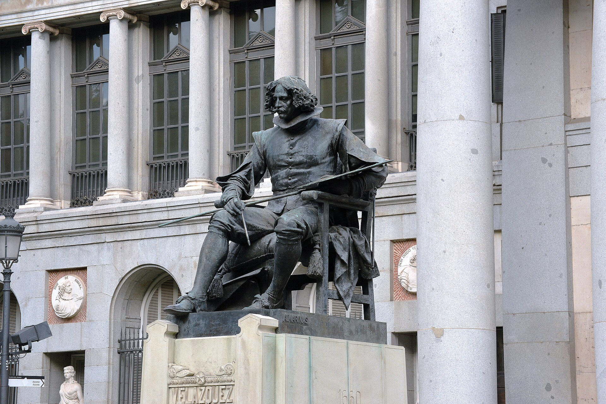
One of the world's three great painting museums, visited the smart way: a timed ticket at opening and a highlights run — Velázquez's Las Meninas, Goya's majas and black paintings, Bosch's Garden of Earthly Delights — then coffee in the Retiro while the crowds are still arriving. The only museum in Madrid we do at all.
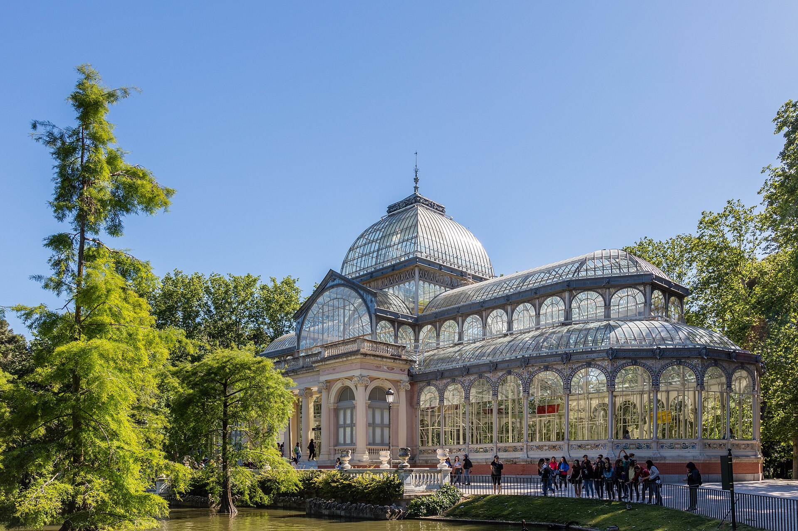
The city's garden — the Crystal Palace, the boating lake, the evening paseo — and the Royal Palace admired from its plaza and the cathedral viewpoint, no interior queue required.
Dinner at Sobrino de Botín — the world's oldest restaurant (1725), wood-fired suckling pig, booked ahead — plus tapas crawls on Cava Baja, churros at San Ginés, and Sunday morning at the El Rastro flea market with vermouth after.
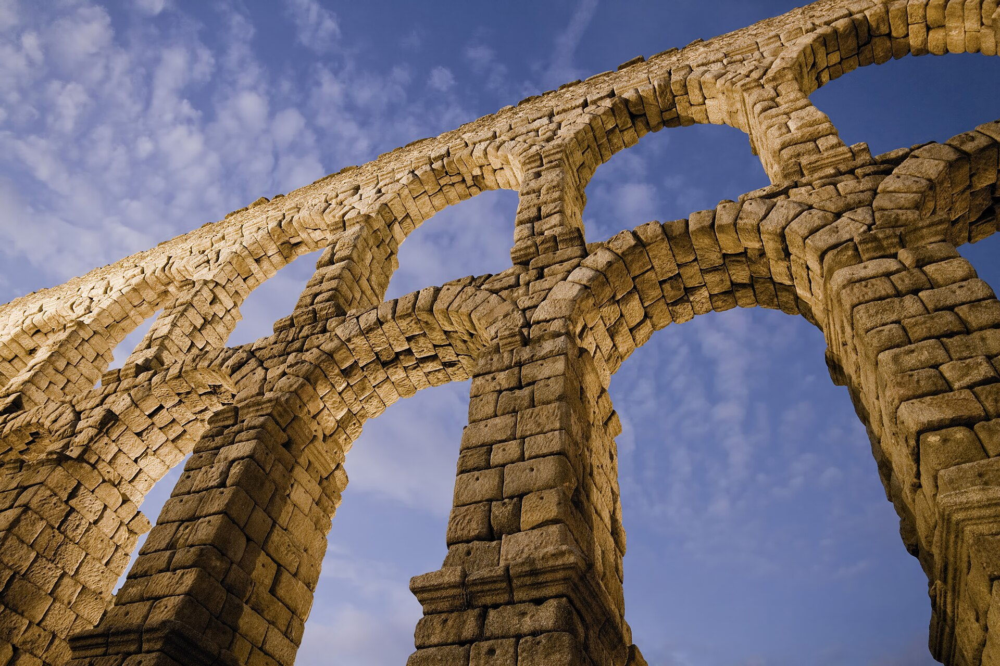
Optional · decided on the dayA Roman aqueduct standing intact across the town square, a fairy-tale castle, and wood-roasted suckling pig for lunch. The fast train makes it a game-time call — energy and weather decide. (If we give Madrid a fourth night, this becomes a committed day.)
Three hours after leaving Madrid we're in a different Spain: green, granite, and Atlantic. Oviedo is compact, pedestrianized, and unhurried — no museums here, just the town, the market, and the best cider culture in the world.
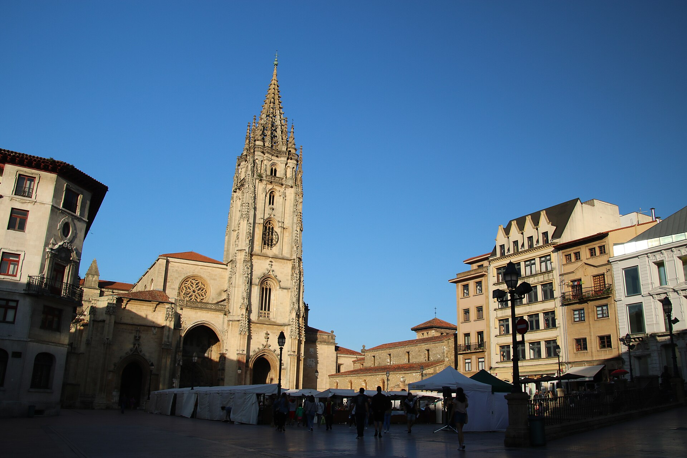
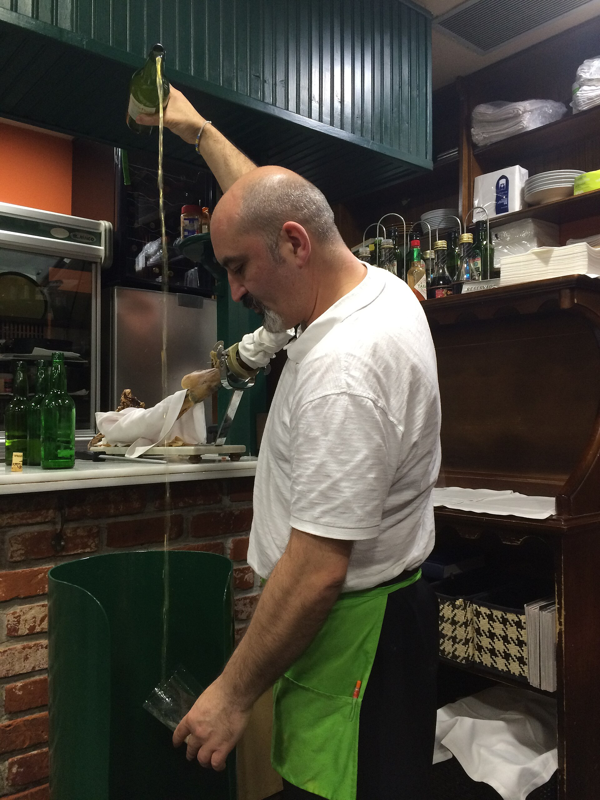
Waiters pour cider from above their heads to wake it up — and the glasses keep coming alongside fabada asturiana, the mighty bean-and-sausage stew, and cachopo. The anti-fancy dinner of the trip, and maybe the best.
Cathedral lanes, arcaded squares, and the El Fontán food market — Cabrales cheese, chorizo, and picnic supplies for the road days ahead.
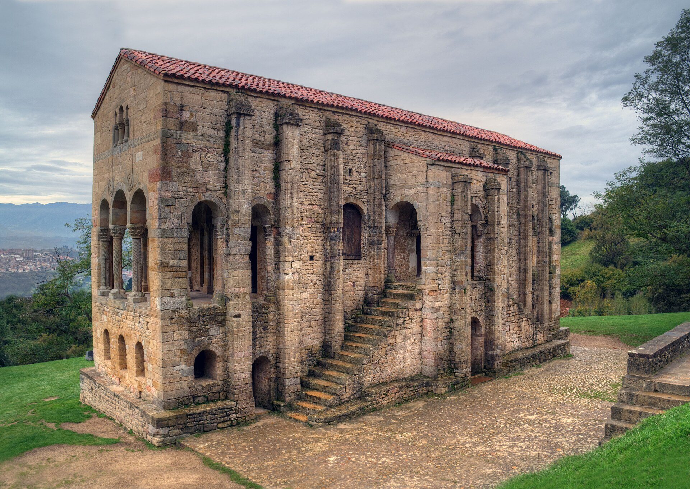
On the hill above town stand Santa María del Naranco and San Miguel de Lillo — UNESCO-listed royal buildings from the 9th century, built by the tiny mountain kingdom where the Reconquista began. Ten minutes by taxi, a thousand years back in time.
Moving day, done cleverly: the trip's headline mountain visit is folded into the drive east. Luggage is loaded once in Oviedo and the trunk stays shut until the hotel; we start early, and the mountains come to us by shuttle.
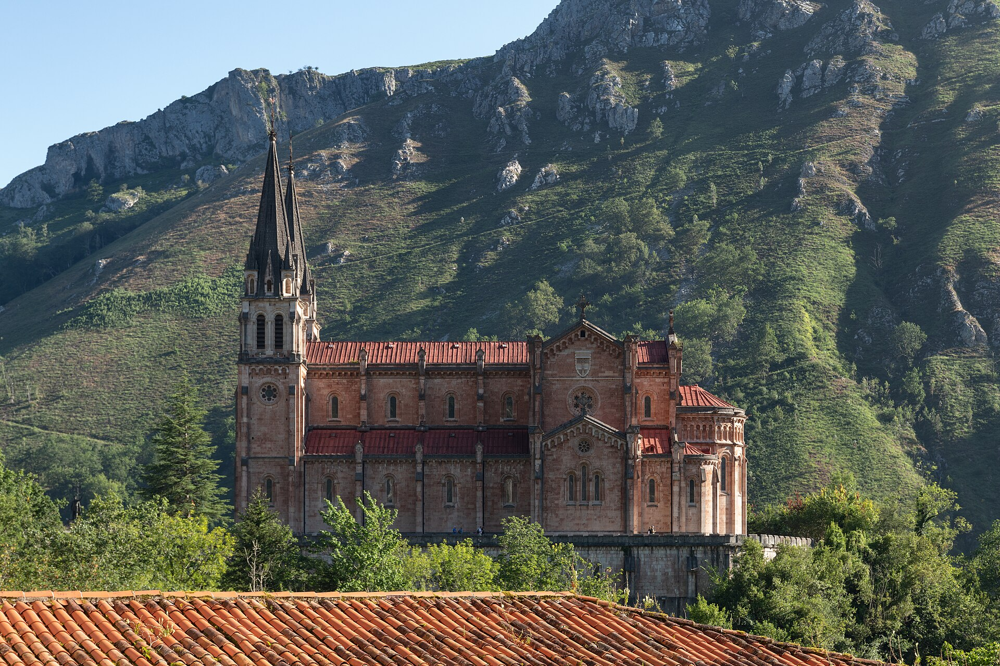
From Cangas de Onís, a pre-booked shuttle climbs to the glacial lakes of Enol and Ercina at 1,100 m — green water, grazing cows, the Picos all around (the summer road is closed to cars, which is exactly why it stays lovely). Strolls between viewpoints are as short as we want them.
Down the same road: the pink basilica in its mountain amphitheater and the Holy Cave shrine in the cliff — where, tradition says, the Reconquista began. Then lunch in Cangas de Onís by its famous humpback bridge.
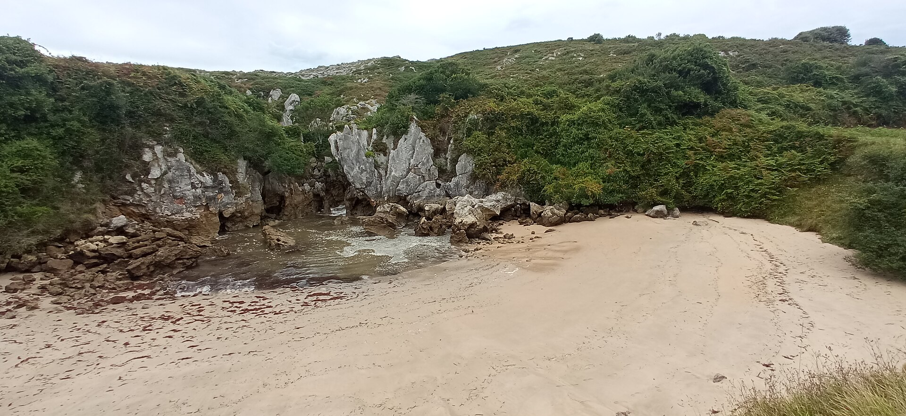
Afternoon · optionalIf energy allows on the easy motorway run to Cantabria: Playa de Gulpiyuri — the beach with no sea, a sinkhole meadow that fills with tidal water through a cave — a short, flat stroll from the road.
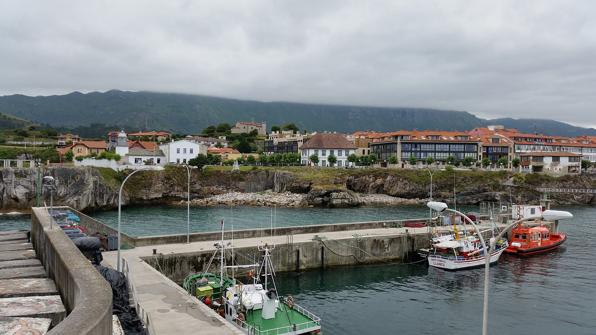
Afternoon · optionalA real fishing town with an old quarter wrapped around its port — the prettiest leg-stretch on this stretch of coast, and a first taste of the sea we'll live beside for the next four nights. (Third option: the ten-minute San Roque viewpoint above Lastres, the classic cliff-village panorama.)
The slow middle of the trip. The base is one of three lovely towns ten minutes apart — sea views in Comillas or San Vicente de la Barquera, medieval perfection in Santillana del Mar — and the four nights hold three real days: coast, mountains, and a spare. The slack is the luxury.
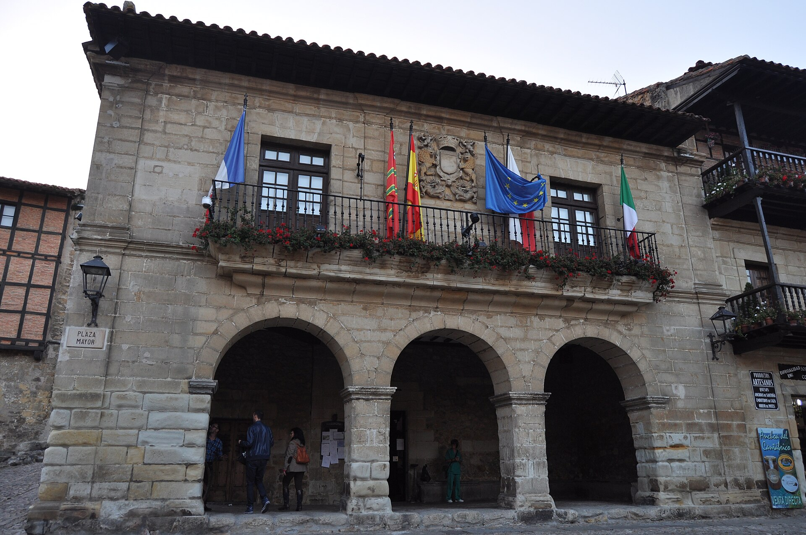
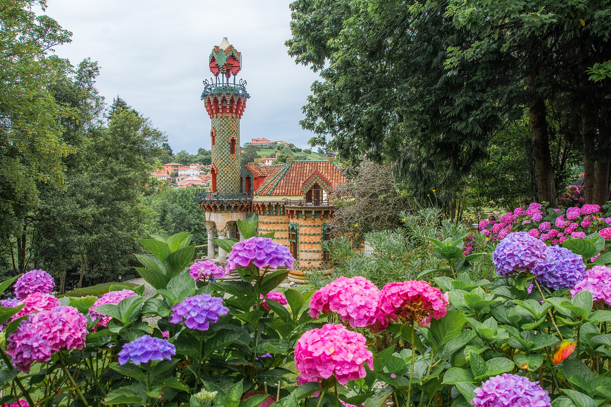
Coast dayEl Capricho — the sunflower-tiled villa a 31-year-old Gaudí built in Comillas — a proper beach, and Santillana del Mar's stone lanes taken early or in the evening, when the day-trippers have gone and we're sleeping next door. The Altamira cave-art museum is on the menu as an option, not an obligation.
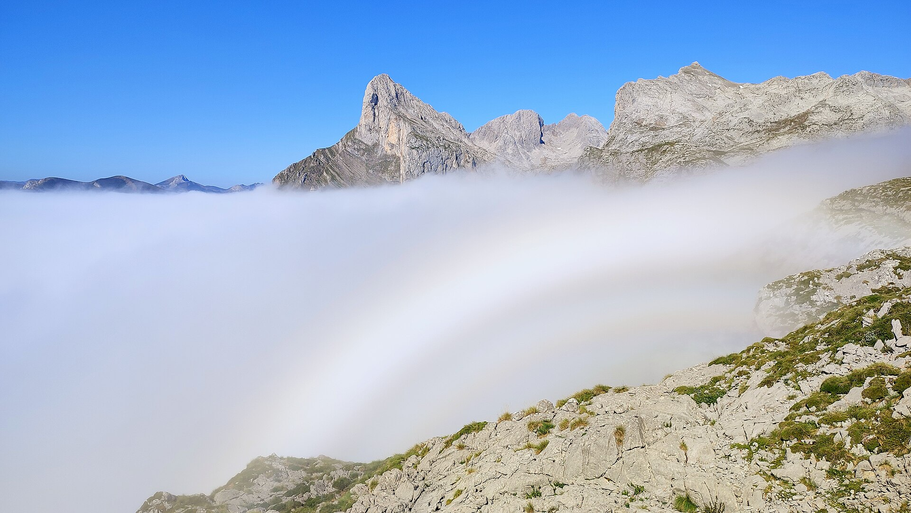
If the morning is clearA cable car rises 750 vertical meters up a rock face to 1,823 m — effortless high-alpine drama, easy strolling on top, and the medieval town of Potes (hearty highland stew, a sip of orujo) on the way home. We check the webcam at breakfast: clear means mountains.
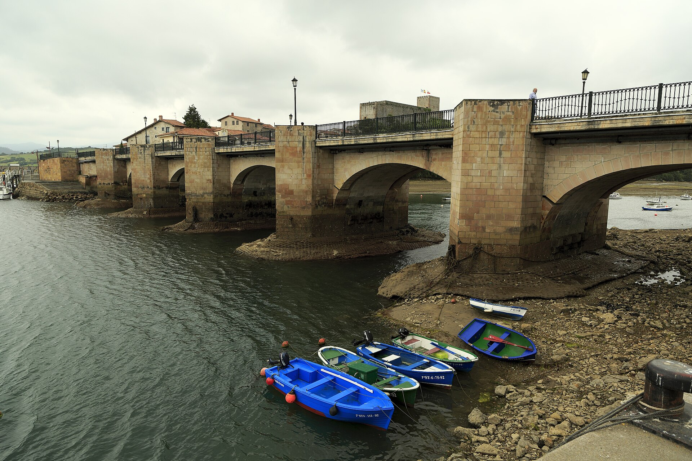
If it's cloudySan Vicente de la Barquera's bridge and boats, or a city day in Santander — the Magdalena peninsula, El Sardinero's beach promenade, the food market. The rainy-day plan here is nobody's consolation prize.
Day four belongs to whatever wants it: beach time below the town, the anchovy shops of Santoña, a second lazy morning in Santillana — or the mountain or city day that got weathered out earlier. Built-in slack, by design.
A former industrial city reborn around one astonishing building, with the best eating of the whole trip — from harbor-step anchovies to a coal-fire fish house. Three nights from one hotel: the coast loop Monday, the Guggenheim Tuesday — and then the car drops us at the plane.
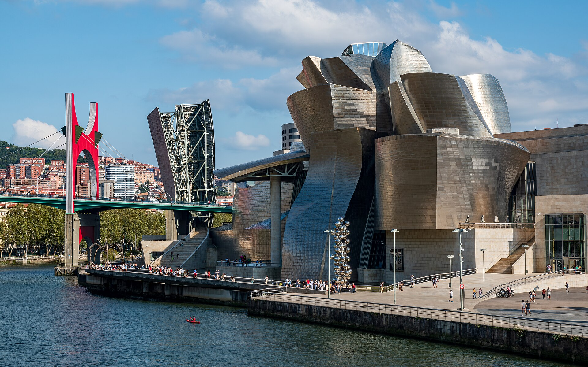
Gehry's titanium ship on the river — the one full museum of the north, and worth the trip for the building alone, with Serra's walk-in steel labyrinths inside and the flower Puppy standing guard. Timed tickets, no queue — and it takes Tuesday because the museum traditionally rests on Mondays. Official site.
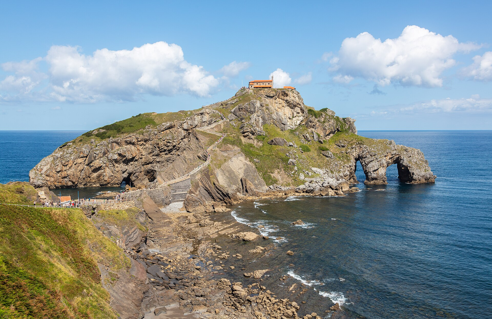
Monday · the coast loopOne coherent loop on the near coast, never more than 45 minutes from town: the hermitage islet of Gaztelugatxe and its winding stone causeway (the clifftop view needs no steps at all), a simple portside lunch in the working fishing town of Bermeo, and Gernika — whose famous market day is Monday, the living version of the market Picasso painted. We met Guernica's story in Madrid; here is where it happened.
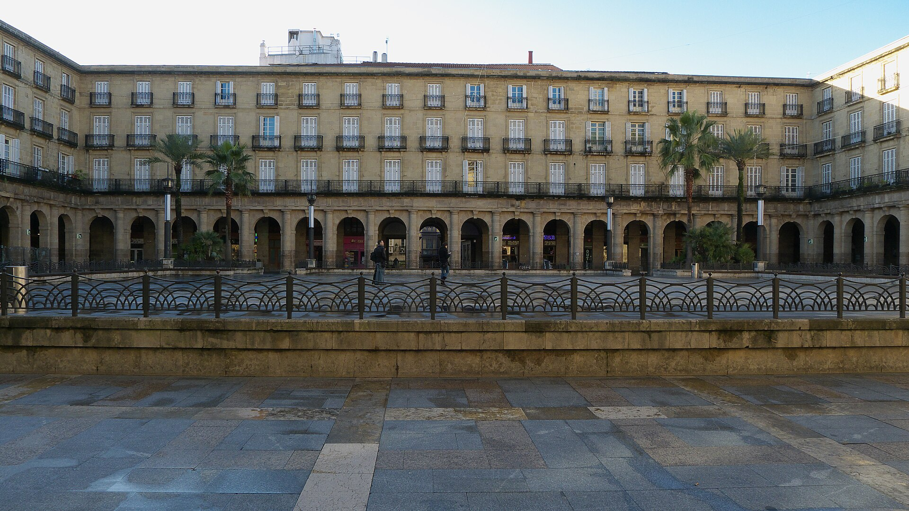
The Siete Calles and the arcaded Plaza Nueva, ringed with pintxos bars — Basque counter-top eating without the San Sebastián crush — and the Ribera market, Europe's largest covered market, for lunch under one roof.
The casual night: grilled sardines on the harbor at Santurtzi, or anchovies and rabas eaten on the stone steps of Algorta's old port — both a short metro ride, both gloriously unceremonious — and on the way, the UNESCO-listed Vizcaya Bridge, the world's first transporter bridge, crosses us over the river in a hanging gondola for less than a euro. The splurge night: a booked table at a traditional Bilbao asador — whole wild turbot over coals, the same fish from the same auctions as the famous Getaria grills, without leaving the city.
The little Artxanda funicular climbs above the city in three minutes for the golden-hour panorama — flat strolling and a café at the top.
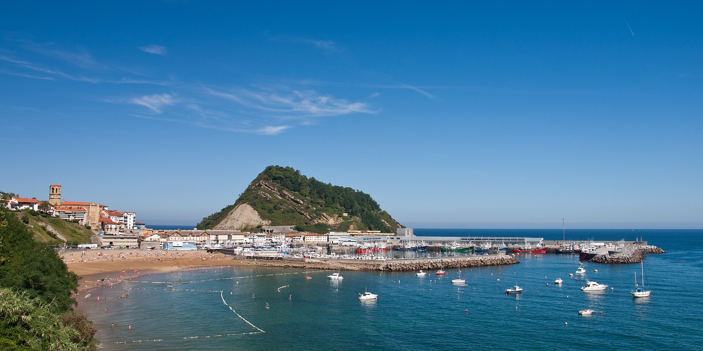
If we add a nightShould Bilbao win the flex night, the bonus day drives an hour east to the harbor grill row of Getaria — whole fish over coals, txakoli grown on the hill above the village — with Zumaia's flysch cliffs, rock strata tilted like the pages of a book, fifteen minutes away. The encore, not the show.
The trip is built around one idea at the table: classic dishes, great ingredients, zero pretense. Two food cultures share one sea on this route — Cantabria cooks it simply, the Basques cook it proudly — and we get both, in that order. Not one tasting menu appears in twelve nights.
Tapas and a 300-year-old roast house in Madrid · cider poured from arm's length with fabada in Oviedo · a mountain lunch in Cangas de Onís · harbor-front dinners, the world's best anchovies, and village-bakery sobaos in Cantabria · highland stew in Potes if the cable car flies · and in Bilbao: pintxos, harbor sardines, and whole turbot over coals to finish.
The heart of the trip's seafood is Cantabria, where the base is a fishing coast and dinner is fresh hake or bream a la plancha on a port terrace — walk in, point, share. Bilbao keeps the register with sardines grilled on Santurtzi's harbor and anchovies on the stone steps of Algorta's old port. The plastic-stools spirit, Spanish-style.
Botín in Madrid (the world's oldest restaurant — wood-fired suckling pig) and a traditional Bilbao asador for the one splurge: whole wild turbot over coals. Everything else walks in the door — because where we're going, that's how the best food works. (A Getaria table joins the list only if the extra Bilbao night happens.)
Moderate, and always at our own pace. The towns are small, the museums are limited to two (one of them a brisk 90 minutes by design), and the mountain moments are engineered for ease — a shuttle to the Covadonga lakes, a cable car at Fuente Dé. Every viewpoint on this trip can be reached without a hike, and the famous Gaztelugatxe steps are strictly optional.
There's exactly one big driving day — and it's carefully built: an early start, the luggage loaded once, a shuttle doing the mountain road, lunch in the middle, and a motorway run to finish. Everything else is an hour or ninety minutes on good roads, and the car's final job is delivering us to the airport door. No car at all for the first five days.
English works fine in hotels, museums, and cities; in village restaurants a pointed finger and a smile order beautifully (and X can handle the menu Spanish). Cards are accepted everywhere — no one needs to carry meaningful cash.
Madrid: dry, sunny, warm. The north coast: this is "Green Spain" — green because it rains — but early September is its driest, warmest window, with the sea at its year-round warmest and the summer crowds gone home on September 1. We pack a light rain layer, and both mountain moments flex around the sky: cloudy morning at Covadonga, we skip the lakes; cloudy morning in Cantabria, the cable car waits and Santander steps in. Weather costs us nothing but a reshuffle.
Not in practice. X & E fly Bilbao → Madrid → Philadelphia with a deliberately generous connection. Mum & Pa take the one-hour hop to Madrid, sleep at a hotel at the airport — a calm final evening, no dawn sprints — and board the Singapore flight fresh the next day.
One decision is deliberately still open: we may add a fourth night in Madrid (making Segovia a committed day) or — the current favorite — a fourth in Bilbao, which buys the Getaria & Zumaia encore day. Either is funded by trimming Cantabria to three nights, which costs the spare day. Every hotel is held refundable until that's decided — so the shape can flex without anything being lost.
Exact train times once tickets go on sale, the Covadonga shuttle timetable when the season's plan publishes in spring, the rental car's one-way fee, the Guggenheim's Monday hours for our dates, and the usual timed tickets (Prado, Guggenheim, the booked tables, the Gaztelugatxe permit). None of it changes the shape of the trip — and none of it is anyone's job but X's.
Useful official links: The Prado · Renfe (Spanish rail) · Guggenheim Bilbao · Basque Country tourism (Gaztelugatxe permits)